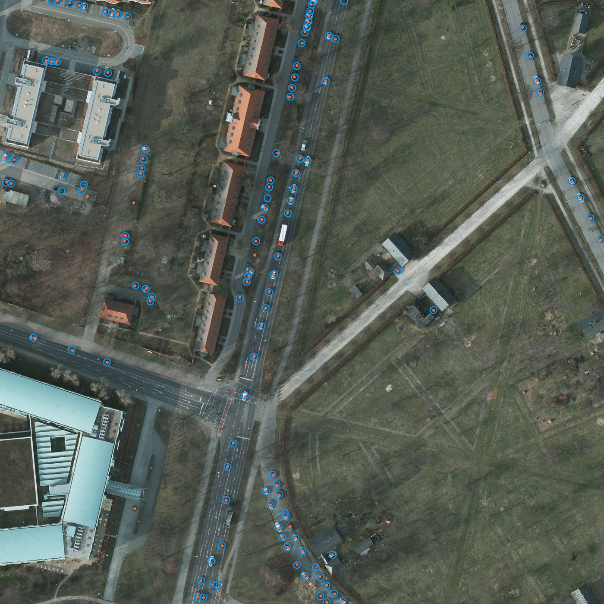
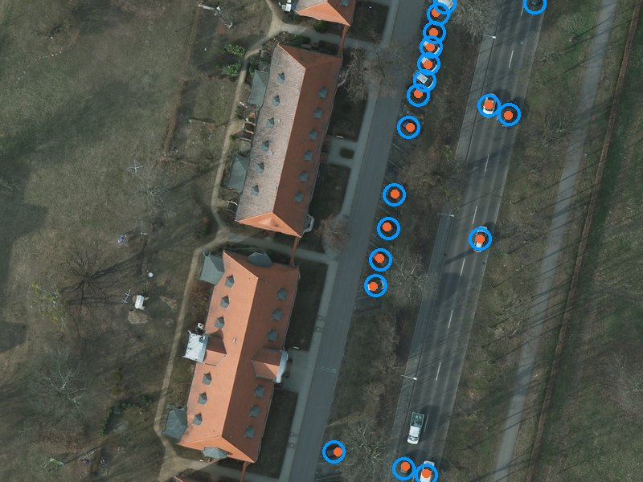
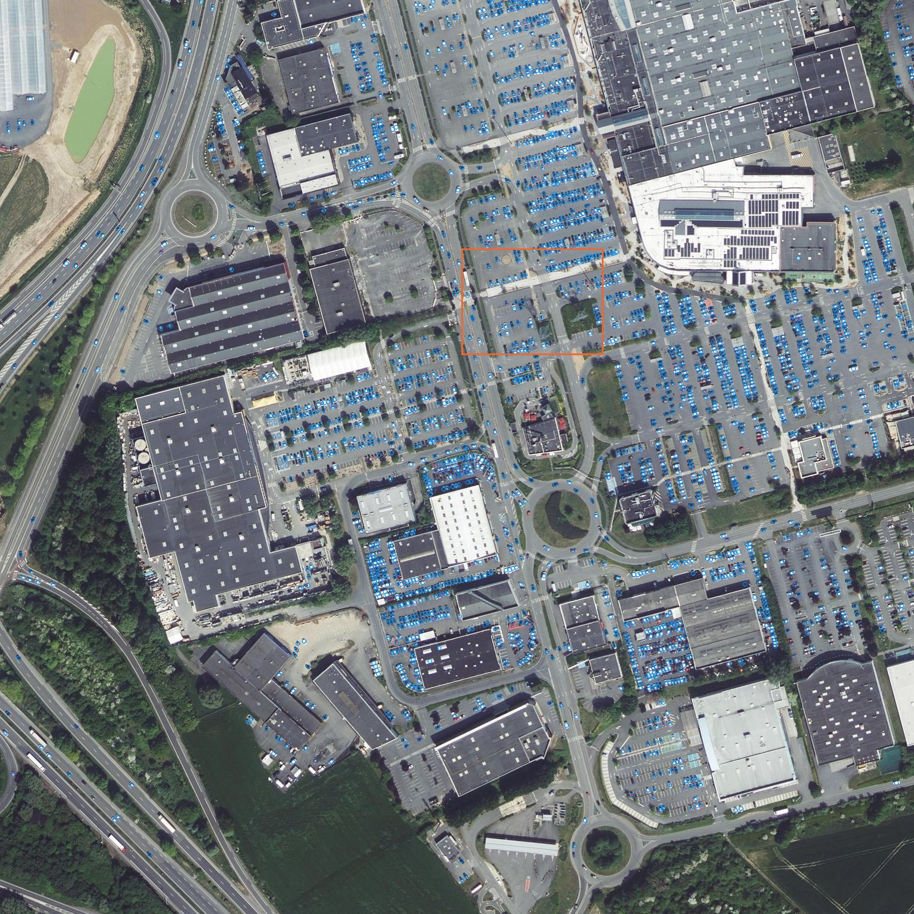
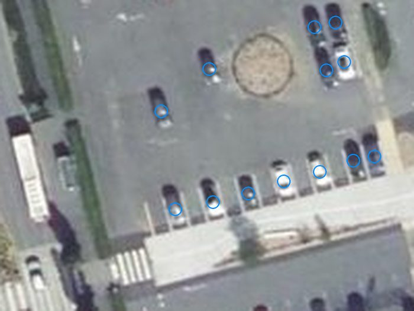
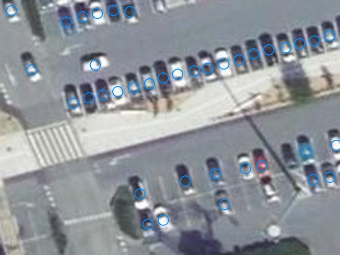
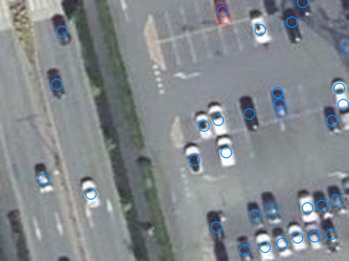
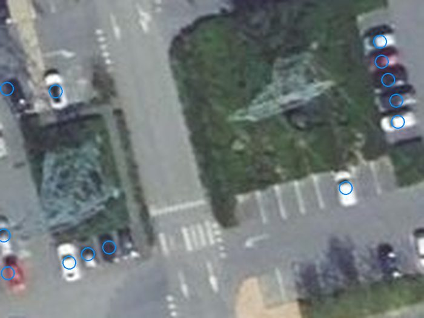

Supporting prototype 2 · The technology
Could a student rebuild Orbital Insight's car counter today?
Case: Orbital Insight, which sold car counts from parking-lot images to hedge funds. We used only free tools and free images, and trained nothing.
(COWC, Potsdam, 113 cars)
(COWC, 11 false alarms)
(IGN photo, ~0.42 km²)
1. What we did
We took YOLO11, an open object detector from Ultralytics, already trained on DOTA, a public set of aerial images with a "small vehicle" class. We cut each large image into tiles, zoomed them so cars are a size the model likes, and merged cars found twice where tiles overlap. We then checked the counts two ways: against COWC, where researchers marked every car by hand, and by eye on part of the Englos photo.
2. Test against cars marked by hand (COWC)
COWC tile top_potsdam_2_12: Potsdam, Germany, about 300 m across at 13.5 cm per pixel, with 113 cars marked by hand. With no zoom, the setting that worked best, the detector counted 117: 106 right, 11 false alarms, 7 missed. The total is +4 cars (+4%) away from the truth.


| Zoom tested on COWC | Counted | Right | False alarms | Missed |
|---|---|---|---|---|
| ×1.0 (no zoom, chosen) | 117 | 106 | 11 | 7 |
| ×1.5 | 116 | 103 | 13 | 10 |
| ×2.0 | 117 | 106 | 11 | 7 |
| ×1.5 + sharpening | 114 | 97 | 17 | 16 |
All rows: same model, confidence 0.25, a detection is right if within 1.5 m of a marked car. Correction (18 Nov): an earlier version of this page reported lower scores (92 right, 21 missed) because our code passed the image colours in the wrong order (red-green-blue instead of the blue-green-red the library expects). We found the bug when our browser tool scored better than this page; all numbers here are re-run with it fixed.
3. Counting the cars at Auchan Englos (IGN, free)
IGN's BD ORTHO aerial photo of the Englos retail park, which holds Auchan, other big stores and their car parks, about 650 m across. Without changes the model found almost nothing here: the photo is softer and lower-contrast than COWC. After zooming ×5 and sharpening, it counted 2,335 cars. Car lengths measured from the detections put the photo at about 0.25 m per pixel. The median car comes out at 4.4 m, as it should.

Hand check. COWC has no labels for Englos, so we checked the orange box ourselves. Of about 103 cars, the model found about 93, raised about 2 false alarms and missed about 10, mostly dark cars in shadow. That's about 90% found and 98% right, close to the COWC result. One area, counted once by eye (numbers rounded), so treat it as a rough check.




4. What this means for Orbital Insight and a new entrant
The model was never the moat. In 2015 counting cars from space needed a company. Today a free, pretrained model gets most of the way in an afternoon, without any training. Orbital Insight's computer vision was real, but anyone can now copy it.
The work is in fitting the model to the images. Settings that worked on one source failed on the other: sharpening helped IGN and hurt COWC. A vendor that buys images from several suppliers must tune and check the model for each one, and keep doing it. Our note's "labelled history" argument is this point: the asset is the checked, consistent record over time, not the algorithm.
Fresh images cost money. IGN photographs each French département about every three years, and the date of this photo is not shown on it. One snapshot cannot tell a fund whether Auchan had a good quarter. For that you need images of the same car park every few days, which means paid suppliers such as Planet or Maxar. So the costly input is the images, not the AI, and rivals can buy the same images. That fits Prototype 1: if every rival can build the counter, the edge from the signal spreads quickly.
5. Limits
REAL COWC labels (113 cars, one Potsdam tile), the IGN photo, the open YOLO11 model trained on DOTA. OUR CHOICES a detection counts as right if it is within 1.5 m of a marked car; zoom ×1.5 for COWC and ×5 plus sharpening for IGN, chosen by looking at results; the Englos check is one area counted once by eye.
We tested on one labelled tile only; COWC has five more sites we did not use. The Englos image is a copy at about 25 cm per pixel, not the full 20 cm IGN download, and its date is unknown. We count all cars in the retail park, including on roads, not Auchan's customers. We did not train or fine-tune the model, which would likely improve the dark-car misses. Results come from code written with an AI assistant and checked by us against the hand labels and by eye.